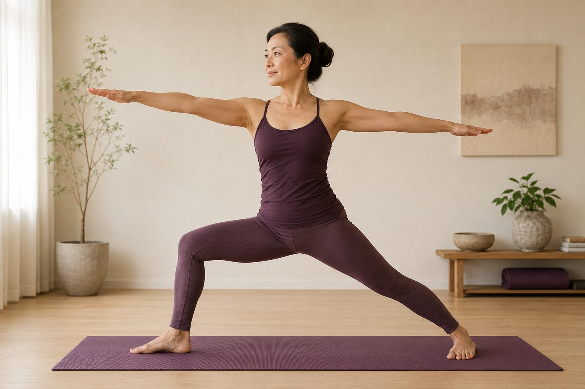

膝蓋在瑜伽裡最容易受傷——先學會保護它

膝蓋喀一聲、蹲下去卡卡的、盤腿一久內側就痠——很多人以為是自己膝蓋「不好」，得多練它、多拉它。但在瑜伽裡，膝蓋反而是最需要「被保護」、而不是被操練的關節。搞懂它的脾氣，你會少走很多冤枉路。
膝蓋，其實是個「只想屈伸」的關節
膝關節在解剖上比較接近「鉸鏈關節」，就像門的鉸鏈一樣，主要工作只有兩件：彎起來、伸直去。它上面接股骨、下面接脛骨，靠前十字韌帶、內外側副韌帶和兩片半月板，把這兩根骨頭穩穩固定在一起。它天生就不擅長旋轉——屈膝時只留一點點轉動的空間，一旦伸直幾乎就鎖住不動了。
這個設計讓你走路、蹲站又省力又穩，但反過來說也很誠實：只要有「轉」或「扭」的力量硬加在膝蓋上，第一個受力的，就是那些本來只負責固定、不負責出力的韌帶和半月板。膝蓋不是不能承重，它很能扛；它怕的是被扭。
它夾在髖和踝中間，最容易「幫別人受過」
這裡有個關鍵觀念：膝蓋是一個「跟隨關節」。它上面的髖關節是球窩關節，能前後擺、能開合、還能自在地內外旋轉；它下面的踝關節也能內翻外翻、幫你踩穩地面。夾在中間的膝蓋，偏偏是三個裡面最不會轉的那一個。
問題就出在這裡：當髖太緊、轉不出你要的角度，或腳踝踩不穩，那個「要轉」的需求並不會消失，它會往阻力最小的地方跑——結果常常就落在那個又被夾在中間、又不太能轉的膝蓋身上。所以你會遇到一件很反直覺的事：膝蓋痛，兇手常常不在膝蓋。很多膝蓋內側的緊、髕骨周圍的痠，追根究柢是髖的活動度不夠、或臀部肌肉沒在工作，把帳算到了膝蓋頭上。想真的護膝，往往得往上游走一步，先把髖鬆開、把負責穩定的臀中肌叫回來出力，而不是一直對著膝蓋又拉又壓。想更完整理解這件事，可以先看「開髖」到底在開哪裡。
膝蓋不太能轉，它的痛，常常是髖或踝「轉不動」時，硬塞給它的一張帳單。
瑜伽裡最傷膝的四個習慣
知道了膝蓋的脾氣，就能看懂為什麼下面這幾個動作最容易讓它受傷。它們的共通點都是——把「轉」或「頂」的力量，錯放到了膝蓋上：
- 盤腿、蓮花硬把膝蓋往下壓：你想開的其實是髖，卻用膝蓋去換角度。髖外旋轉不出來，膝蓋內側的韌帶就被硬生生拉開，這是新手最常見的傷法。這種「硬掰」的誤會，「開髖」不是把腿硬掰開講得很清楚。
- 站姿時膝蓋往內塌（膝內扣）：常出現在下犬、戰士式、深蹲。多半是臀中肌和髖外旋肌群沒力，膝蓋失去對齊、往內倒，扭力就全壓在關節縫上。
- 前腳膝蓋衝過腳尖：戰士一、二式做弓箭步時重心太往前，膝蓋前方承受過大的剪力，久了髕骨周圍就開始抗議。
- 站直時把膝蓋鎖死：把膝往後頂到底看起來很穩，其實是把體重整個丟給韌帶，讓股四頭肌整個放假。短期輕鬆，長期反而磨損。
護膝，就記住三個原則
不用背一堆細節，把握三個方向，大部分的膝蓋風險都能避開：
- 活動度往上游要：想要更深的角度，先問髖和踝夠不夠鬆，而不是逼膝蓋讓步。
- 膝蓋永遠對齊第二根腳趾：不管是站姿、弓箭步還是蹲，讓膝蓋、腳踝和第二腳趾連成一條直線，扭力就不會卡在關節裡。
- 微彎、不鎖死：站姿時讓膝蓋留一點「軟軟的」空間，用股四頭肌去撐住，而不是靠關節頂到底硬撐。
這也是壁繩特別好用的地方。繩子從上方給你支撐和借力，做站姿或後彎時可以分擔一部分體重，你就不必用膝蓋去硬扛重心；需要開髖的時候，也能靠繩子的張力慢慢引導，把角度交還給髖，而不是逼膝蓋讓步。過程中老師會在旁邊幫你看膝、踝、髖有沒有對齊，把「對齊」這件事，從你自己盲猜變成看得見。
在調整膝蓋之前，先看清楚你的髖和下半身怎麼站
AI 體態檢測在教室現場做，用鏡頭把你的站姿、膝踝對齊和骨盆位置看清楚，老師再幫你判斷該從哪裡先鬆、先練，不用盲猜、不用硬拉膝蓋。
預約首次 NT$199 AI 體態檢測今天可以先記住的一件事
如果只帶走一句話，那就是——膝蓋不是拿來「操」的，是拿來「對齊」的。下次做動作覺得膝蓋卡卡、痠痠的，先別急著再多拉它，退一步看看：是不是髖太緊、腳掌沒踩穩、膝蓋跑掉了對齊？把上下游先顧好，膝蓋通常就自己安靜了。改變不用一次到位，一個動作、一個動作慢慢對齊，循序地來，才是對膝蓋最溫柔的練法。
本頁為體態與姿勢的一般衛教與練習分享，非醫療診斷或治療。若有疼痛、舊傷或特殊病史，請先諮詢合格醫療專業人員。